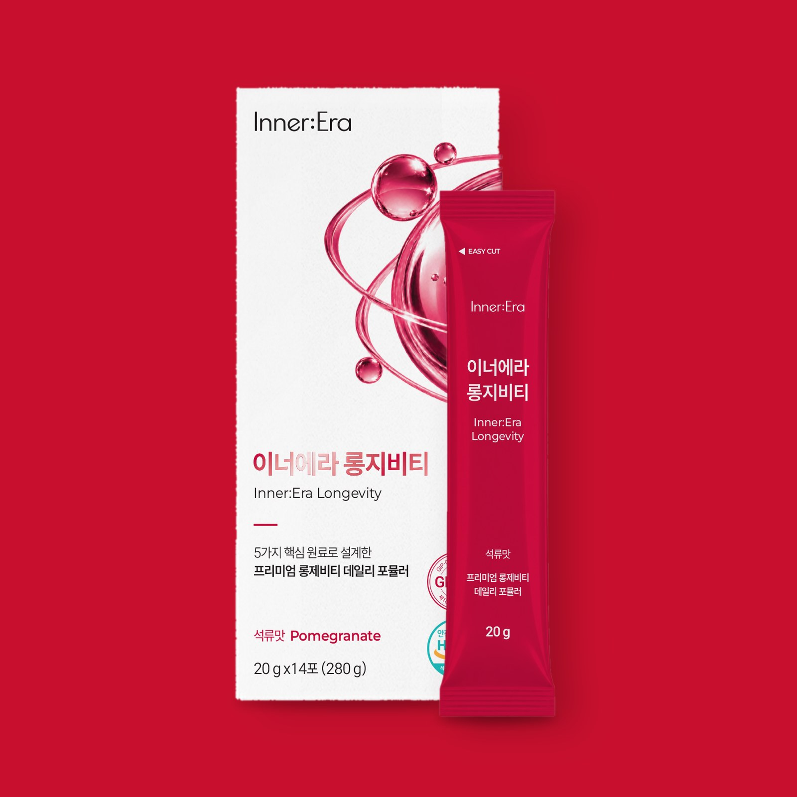
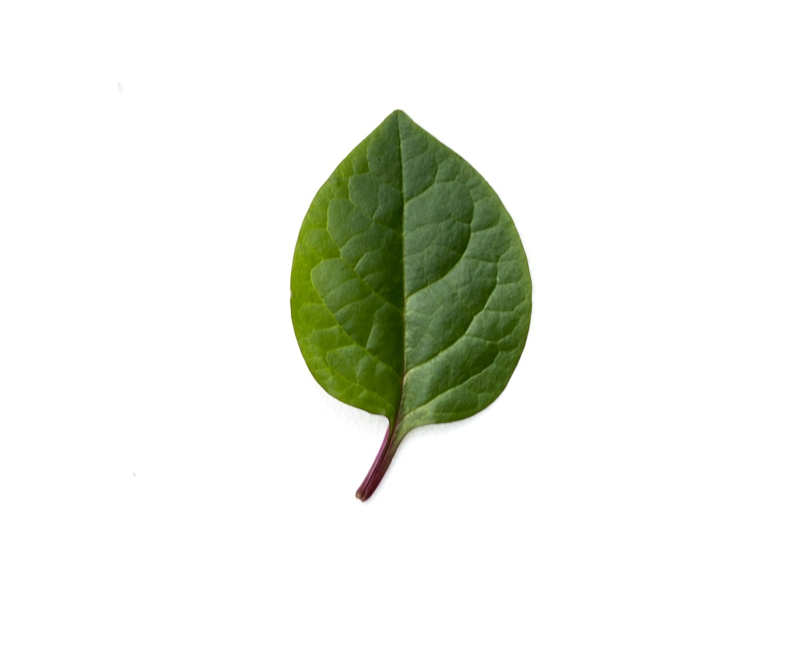
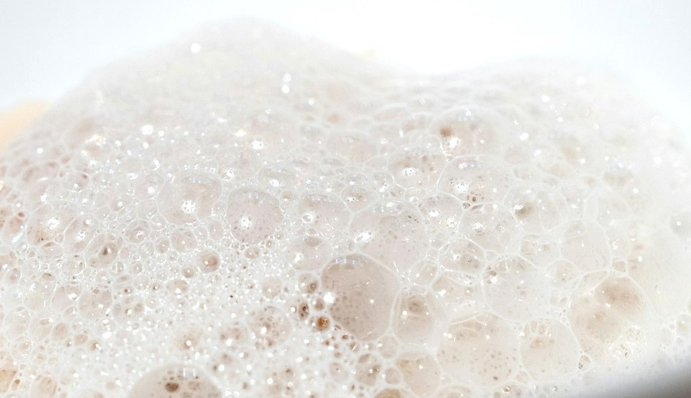
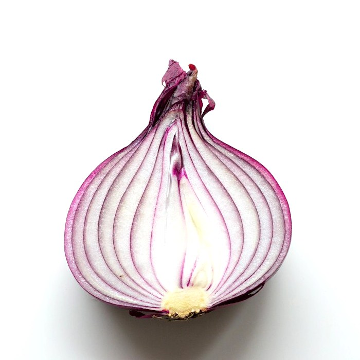
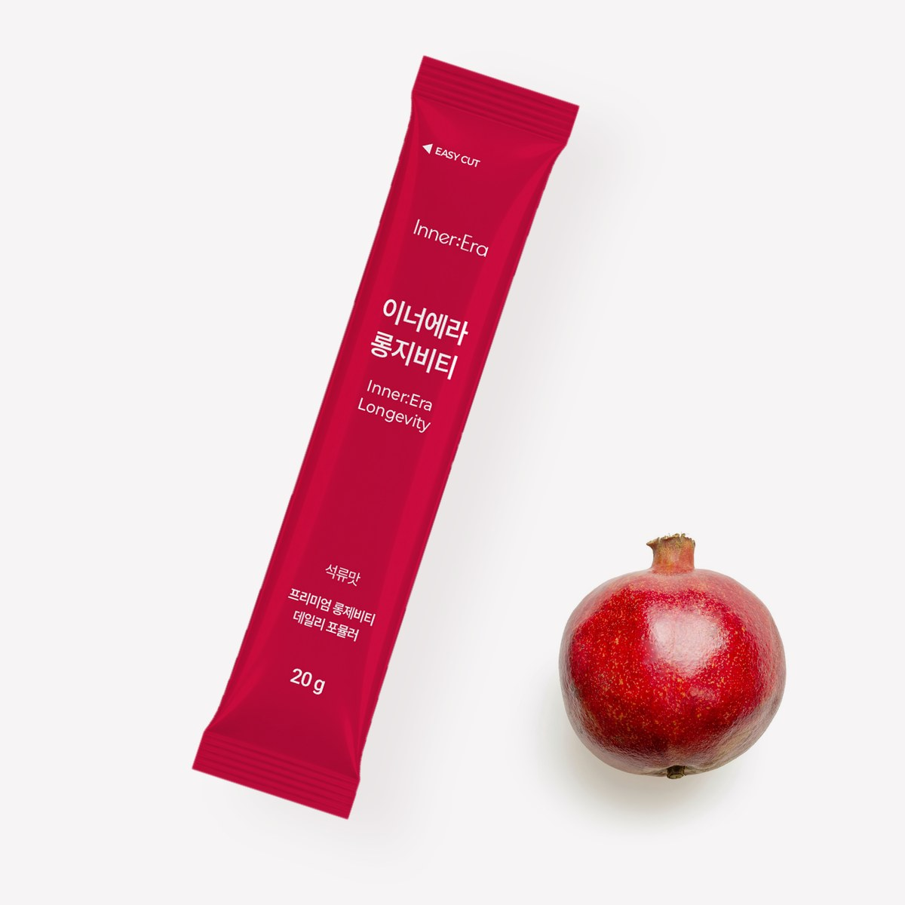
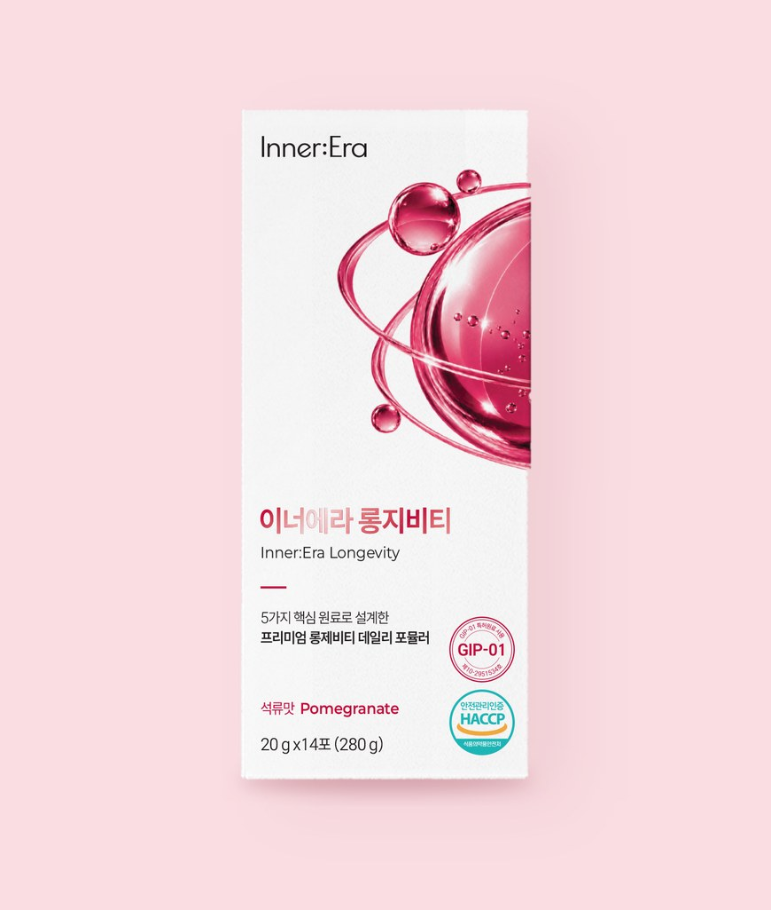
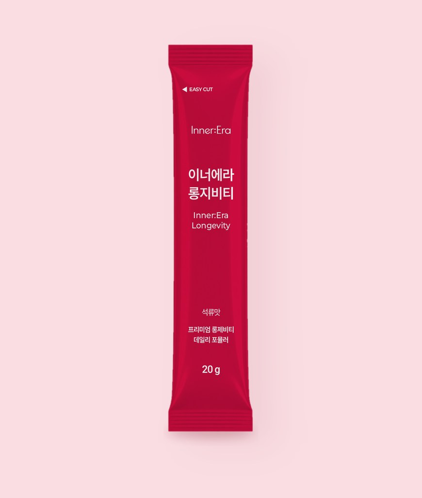

Alpha-Lipoic Acid
알파리포산
found in시금치·브로콜리 등에 미량
황 원자 2개가 고리를 이룬 지방산입니다.
- 분자식
- C8H14O2S2
- 분자량
- 206.3
- PubMed 논문
- 7,399편

GIP-01 특허원료 사용
20 g × 14포280 g · 석류맛 Pomegranate
5가지 핵심 원료로 설계한 프리미엄 롱제비티 데일리 포뮬러 — 따로 챙기던 다섯 통 대신, 하루 한 포.
다섯 가지 핵심 원료가 무엇이고, 자연 속 어디에 있는지 하나씩 보여드립니다.
Alpha-Lipoic Acid · 지방산
시금치·브로콜리 등에 미량

Glutathione · 트리펩타이드
효모 등에서 얻음

Curcumin · 폴리페놀
강황 뿌리줄기의 노란 색소

Quercetin · 플라보놀
양파 껍질·사과·케이퍼 등

Nicotinamide Mononucleotide · 뉴클레오타이드
브로콜리·에다마메·아보카도 등에 미량

Alpha-Lipoic Acid
found in시금치·브로콜리 등에 미량
황 원자 2개가 고리를 이룬 지방산입니다.

Glutathione
sourced from효모 등에서 얻음
글루탐산·시스테인·글리신 3가지 아미노산이 이어진 트리펩타이드입니다.

Curcumin
found in강황(Curcuma longa) 뿌리줄기
강황 뿌리줄기의 노란 색소 성분으로, 폴리페놀의 한 종류입니다.

Quercetin
found in양파 껍질·사과·케이퍼 등
플라보노이드 가운데 플라보놀에 속하는 성분입니다.

Nicotinamide Mononucleotide
found in브로콜리·에다마메·아보카도 등에 미량
비타민 B3(나이아신) 계열에서 만들어지는 뉴클레오타이드로, NAD+의 전구체로 연구되는 성분입니다.
*상기 내용은 제품이 아닌 원료에 대한 정보입니다.
논문 수: PubMed 제목·초록 검색 기준, 2026년 10월 · 분자 구조: PubChem 3D 좌표

5가지 핵심 원료
알파리포산·글루타치온·커큐민·퀘르세틴·NMN을 하나의 젤리스틱에 담았습니다.
석류맛 젤리스틱
스틱 1포 20 g, 한 상자에 14포(280 g)가 들어 있습니다.
EASY CUT 낱개 포장
스틱 윗부분에 EASY CUT 표시가 있는 한 포씩 포장입니다.


5가지 원료
원료별 PubMed 논문 수제목·초록 검색 기준, 2026년 10월